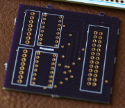

Christalee Bieber
Welcome! I’m a STEM/maker educator based in Brooklyn, NY, looking for work that takes advantage of my technical fluency, communication skills, and attention to detail (e.g. project manager, QA/testing, technical writer, or junior software dev). I’m also open to hardware prototyping and fabrication work. Find out more below or get in touch at christalee@teallabs.org
Resume (pdf)
Github
Writing
Portfolio
Berrybasket - Networked Datalogger (2013)
 Berrybasket logs input from up to 14 analog voltage sensors and uploads the data to a server, so it can be viewed in near-realtime. Details on the hardware and software, including links to the source code and PCB design, are described on the project website. I primarily assembled the sensors and prototype board, and assisted my partner with software design and testing. We used the board with 5th and 6th grade students learning about solar gain, and presented a poster about it at the Open Hardware Summit in 2013.